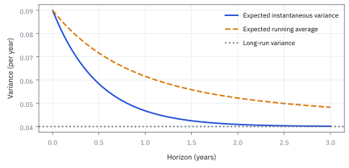

13.7 The Feynman–Kac Formula
ราคาที่คิดจากค่าเฉลี่ยของเส้นทางข้างหน้า กับราคาที่ได้จากการแก้สมการเชิงอนุพันธ์ย่อยย้อนจากวันครบกำหนด เป็นคำตอบเดียวกันเมื่อเงื่อนไขของ Feynman–Kac ครบ จึงเลือกวิธีที่เหมาะกับโจทย์ แล้วใช้อีกวิธีตรวจภายในความคลาดของการคำนวณ
หุ้นสมมติราคา \$200 ความผันผวน 30% ต่อปี ดอกเบี้ย 4% note ตัวหนึ่งจ่าย $S_1^2/200$ ดอลลาร์ในอีกหนึ่งปี นักวิเคราะห์ใช้ 13.6: ค่าเฉลี่ยของราคาใต้ $Q$ คือ $200e^{0.04}=\$208.16$ ใส่เข้าสูตรเงินที่จ่ายได้ \$216.66 คิดลดกลับได้ \$208.16 อีกทีมเขียนโปรแกรมแก้สมการย้อนจากวันครบกำหนดบนตาราง ได้ \$227.77 ใครถูก?
ลองตอบก่อนเปิดเฉลย
ตาราง \$227.77 ถูก และการสุ่มเส้นทางไปข้างหน้าแล้วเฉลี่ยเงินที่จ่ายก็ให้ \$227.77 เช่นกัน (ภายในความคลาดของการสุ่ม) นักวิเคราะห์ใส่ราคาเฉลี่ยเข้าสูตรที่โค้งหงาย ในตัวอย่างนี้จึงต่ำกว่าค่าเฉลี่ยของเงินที่จ่าย ต่ำไปประมาณ \$19.60 หรือ 8.61% ของราคาที่ถูก ถ้าใช้ราคาทางลัดเป็นฐานแทน ราคาที่ถูกจะสูงกว่า 9.42% ซึ่งคำนวณจาก $e^{\sigma^2}-1$
สิ่งที่เราจะสร้าง
13.6 ให้สูตรราคา $V_0=e^{-rT}\mathbb E^Q[H_T]$ ซึ่งเป็นการมองไปข้างหน้า: สุ่มเส้นทางแล้วเฉลี่ย แต่โต๊ะ option ส่วนใหญ่ตั้งราคาอีกทาง คือเริ่มจากเงินที่จ่ายในวันครบกำหนดแล้วเดินย้อนเวลาบนตาราง หน้านี้แสดงว่าสองทางคือของชิ้นเดียวกัน ด้วยเครื่องมือสองชิ้นของบทนี้: tower property ของ 4.1 และ Itô's lemma ของ 13.2
เริ่มจากต้นไม้สองชั้นด้วยมือ พิสูจน์สะพาน แล้วคิด note ในโจทย์สามทาง คือสูตรปิด ตารางเดินย้อน และการสุ่มเดินหน้า จากนั้นขยายไปกรณีที่ดอกเบี้ยเองก็สุ่ม คิดราคาพันธบัตรของ Vasicek จาก 13.4 ทั้งสองทาง
ศัพท์ที่ใช้ในหัวข้อนี้
- Feynman–Kac formula
- ผลที่ว่าค่าเฉลี่ยที่คิดลดของเงินที่จ่ายตอนจบ เป็นคำตอบของสมการเชิงอนุพันธ์ย่อยที่มีเงื่อนไขตอนจบ ใช้สลับระหว่างการสุ่มกับการแก้สมการบนตาราง
- Partial differential equation (PDE)
- สมการที่ผูกอนุพันธ์ของมูลค่าตามเวลาและตามราคาเข้าด้วยกัน ใช้เดินมูลค่าย้อนจากวันครบกำหนดมาหาวันนี้
- Terminal condition
- มูลค่าในวันครบกำหนดเท่ากับเงินที่สัญญาจ่าย $f(T,S)=g(S)$ ใช้ล็อกคำตอบของ PDE ให้เหลือตัวเดียว
- Monte Carlo
- การสุ่มเส้นทางจำนวนมากแล้วเฉลี่ยเงินที่จ่ายที่คิดลดแล้ว ใช้เมื่อมีหลายตัวแปรหรือเงินที่จ่ายขึ้นกับทั้งเส้นทาง ความคลาดหดตามรากของจำนวนเส้นทาง
- Finite difference
- การแทนอนุพันธ์ด้วยผลต่างของค่าบนตาราง เช่น $f_{SS}\approx(f_{i+1}-2f_i+f_{i-1})/\Delta S^2$ ใช้แก้ PDE ย้อนเวลาทีละขั้น
- Delta และ gamma
- $f_S$ และ $f_{SS}$ ของมูลค่าสัญญา delta บอกว่าต้องถือหุ้นกี่หุ้นเพื่อหักล้าง gamma บอกว่า delta เปลี่ยนเร็วแค่ไหน (บทที่ 14)
สัญลักษณ์และหน่วย
| สัญลักษณ์ | ความหมาย | หน่วย |
|---|---|---|
| $S_t,\ r,\ \sigma$ | ราคาหุ้นใต้ $Q$, ดอกเบี้ย, ความผันผวน | \$ ต่อหุ้น, ต่อปี, ต่อ $\sqrt{\text{yr}}$ |
| $T,\ \tau$ | วันครบกำหนด และเวลาที่เหลือ $T-t$ | ปี |
| $g(S),\ K$ | เงินที่จ่าย $S^2/K$ และค่าคงที่ที่ทำให้หน่วยเป็นดอลลาร์ | \$, \$ ต่อหุ้น |
| $f(t,S)$ | มูลค่าสัญญาที่เวลา $t$ เมื่อราคาเป็น $S$ | \$ |
| $f_t,\ f_S,\ f_{SS}$ | อนุพันธ์ตามเวลา, delta, gamma | \$ ต่อปี, หุ้น, หุ้นต่อ \$ |
| $M_u$ | มูลค่าที่คิดลดแล้ว $e^{-ru}f(u,S_u)$ | \$ |
| $r_t,\ \kappa,\ \theta,\ \sigma_V$ | short rate และพารามิเตอร์ของ Vasicek (13.4) | ต่อปี |
ขั้นที่ 1 — ต้นไม้สองชั้นด้วยมือ: เดินหน้ากับเดินย้อนได้เท่ากัน
โจทย์ให้อะไรมาบ้าง: หุ้น \$100 แต่ละชั้นขึ้น 1.1 เท่าหรือลง 0.9 เท่า ดอกเบี้ยศูนย์ น้ำหนักใต้ $Q$ จึงครึ่งต่อครึ่ง (ค่าเฉลี่ยของราคาต้องไม่โต แบบ 13.6 ขั้นที่ 1) สัญญาจ่าย $S_2^2/100$ คิดสองทาง: เฉลี่ยทุกเส้นทางตรง ๆ กับเฉลี่ยย้อนทีละชั้น แล้วเทียบกับการใส่ราคาเฉลี่ยเข้าสูตร
ดูราคาก่อน: อ่านรูปแรกจากซ้ายไปขวา ทุกกิ่งมีโอกาส 1/2 จุด 99 มีสองทางเข้า: ขึ้นแล้วลง กับลงแล้วขึ้น จึงมีโอกาสรวม 1/2 ไม่ใช่ 1/3
เปลี่ยนราคาเป็นเงินที่จ่าย แล้วคิดย้อน: ปลายทาง 121 จ่าย $121^2/100=146.41$ ดอลลาร์ ทำแบบเดียวกันที่ 99 และ 81 จากนั้นอ่านรูปที่สองจากขวาไปซ้าย แต่ละจุดก่อนครบกำหนดเป็นค่าเฉลี่ยของสองจุดถัดไป เพราะดอกเบี้ยเป็นศูนย์จึงยังไม่ต้องคูณตัวคิดลด
ตำแหน่งในสองรูปตรงกัน แต่รูปแรกเป็น ราคาหุ้น รูปที่สองเป็น มูลค่าสัญญา จึงไม่ควรนำ 110 ไปเฉลี่ยกับ 81.81 ตารางเวลานี้มีสองชั้นเท่านั้น ยังไม่ใช่หุ้น \$200 ของโจทย์เปิดเรื่อง
คำตอบ: สองทางได้ 102.01 เท่ากัน เพราะค่าเฉลี่ยซ้อนค่าเฉลี่ยยุบเหลือค่าเฉลี่ยเดียว (tower property ของ 4.1) ทางเดินย้อนคือต้นแบบของ PDE: แต่ละจุดในตัวอย่างดอกเบี้ยศูนย์นี้มีค่าเท่ากับค่าเฉลี่ยของจุดถัดไป ถ้าดอกเบี้ยไม่เป็นศูนย์ ต้องคิดลดค่าเฉลี่ยนั้นด้วย ส่วนการใส่ราคาเฉลี่ยได้ 100 ต่ำไป เพราะ $S^2$ โค้งหงาย
ตรวจเองใน 10 วินาที: เส้นทางกลางมีสองเส้น (ขึ้นแล้วลง และลงแล้วขึ้น) จึงได้น้ำหนัก $\tfrac12$ และ $121\times0.25+99\times0.5+81\times0.25=100$ ราคาเฉลี่ยไม่โตจริงตามที่ตั้งไว้
ขั้นที่ 2 — ของที่โจทย์ให้ และนิยามของมูลค่า
จากนี้กลับไปใช้หุ้น \$200 ดอกเบี้ย 4% และความผันผวน 30% ของโจทย์เปิดเรื่อง ในเวลาต่อเนื่อง ใต้ $Q$ หุ้นโตเท่าดอกเบี้ย (13.6 ขั้นที่ 5) นิยามมูลค่าที่เวลา $t$ เมื่อราคาเป็น $S$ ด้วยสูตรของ 13.6 ที่เริ่มนับจาก $t$ นี่คือทางเดินหน้าของขั้นที่ 1
$S^2$ มีหน่วยดอลลาร์กำลังสอง หารด้วย $K$ ที่มีหน่วยดอลลาร์จึงได้ดอลลาร์ สูตรของ $f(t,S)$ เป็นนิยามของมูลค่า คำถามของหน้านี้คือฟังก์ชันที่นิยามด้วยค่าเฉลี่ยนี้ต้องแก้สมการอะไร
ขั้นที่ 3 — สะพาน: มูลค่าที่คิดลดไม่มี drift แล้วใช้ Itô
ให้ $M_u:=e^{-ru}f(u,S_u)=e^{-rT}\mathbb E^Q_u[g(S_T)]$ มองจากเวลาก่อนหน้า ค่าเฉลี่ยของค่าเฉลี่ยยุบเหลือค่าเฉลี่ยเดียว $M$ จึงเป็น martingale ใต้ $Q$ ขั้นที่ 1 ในเวลาต่อเนื่อง ใช้กฎผลคูณของ 13.5 กับ $e^{-ru}$ คูณ $f$ และ Itô ของ 13.2 กับ $f(u,S_u)$
$e^{-ru}$ เป็นฟังก์ชันของเวลาอย่างเดียว ไม่มีส่วน $dW$ พจน์ไขว้ของกฎผลคูณจึงเป็นศูนย์ ก้อนที่คูณ $dW^Q$ เฉลี่ยศูนย์ (13.3) ถ้าก้อนที่คูณ $du$ ไม่เป็นศูนย์ที่เวลาและราคาใด $M$ จะไหลขึ้นหรือลงแบบคาดได้จากจุดนั้น ซึ่งขัดกับการเป็น martingale วงเล็บจึงต้องเป็นศูนย์ทุกจุด
ขั้นที่ 4 — PDE ที่เดินย้อน พร้อมเงื่อนไขตอนจบ
เขียนผลของขั้นที่ 3 ให้ครบ ที่วันครบกำหนดไม่มีเวลาเหลือ มูลค่าจึงเท่ากับเงินที่จ่าย เงื่อนไขนี้คือชั้นสุดท้ายของต้นไม้ในขั้นที่ 1
อ่านทีละพจน์: มูลค่าเปลี่ยนตามเวลา บวกผลของ drift $r$ บวกผลของความโค้งคูณ variance ต้องเท่ากับผลตอบแทนของเงินฝาก $rf$ พอดี นี่คือ Feynman–Kac ในรูปที่บทที่ 14 จะได้อีกทางจากพอร์ตเลียนแบบ และเรียกว่าสมการ Black–Scholes
สะพานนี้ต้องการเงื่อนไขทางเทคนิค: เงินที่จ่ายต้องไม่โตเร็วเกินไป และก้อน $dW^Q$ ต้องเฉลี่ยศูนย์จริงไม่ใช่แค่ในช่วงสั้น ในแบบจำลองที่ความผันผวนระเบิดเมื่อราคาสูง ข้อหลังอาจพัง แล้วสองทางให้ตัวเลขต่างกัน
Figure 13.7a — สองทิศ หนึ่งฟังก์ชันมูลค่า

ขั้นที่ 5 — ทางเดินหน้า: ค่าเฉลี่ยของ S² ใต้ Q จาก Itô
13.2 ขั้นที่ 11 หา $\mathbb E[S_1^2]$ ใต้ drift $\mu$ ด้วย Itô กับ $f=x^2$ ใต้ $Q$ ทำเหมือนเดิมโดยใช้ $r$ แทน $\mu$ แล้วคิดลดตามนิยามของขั้นที่ 2
drift ของ $S^2$ คือ $2r$ จาก $af_x$ บวก $\sigma^2$ จากความโค้ง ค่าเฉลี่ยจึงโตด้วยอัตรา $2r+\sigma^2=0.17$ ตัวคิดลดหัก $r$ ออกหนึ่งตัว เหลือ $r+\sigma^2=0.13$ ความผันผวนโผล่เป็นบวกเพราะเงินที่จ่ายโค้งหงาย
ขั้นที่ 6 — ทางเดินย้อน: แทนลง PDE แล้วทุกพจน์หักกัน
ตรวจว่าคำตอบจากทางเดินหน้าแก้ PDE ของขั้นที่ 4 ได้จริง หาอนุพันธ์สามตัวโดยเขียนกลับในรูปของ $f$ เอง (เวลาที่เหลือ $\tau=T-t$ ลดลงเมื่อ $t$ เพิ่ม จึงมีเครื่องหมายลบใน $f_t$) แล้วแทนทีละพจน์ และตรวจเงื่อนไขตอนจบ
$S$ ตัดกับ $1/S$ ในพจน์ delta และ $S^2$ ตัดกับ $1/S^2$ ในพจน์ gamma ก้อนของ $r$ คือ $-r+2r-r$ ก้อนของ $\sigma^2$ คือ $-\sigma^2+\sigma^2$ หักกันหมดทุกเวลาและทุกราคา ขั้นนี้เป็น calculus ธรรมดา ไม่ใช้ความน่าจะเป็นเลย แต่ได้คำตอบเดียวกับค่าเฉลี่ยของขั้นที่ 5
ขั้นที่ 7 — สามโปรแกรม หนึ่งราคา: สูตรปิด ตาราง และการสุ่ม
โจทย์ให้อะไรมาบ้าง: โค้ดท้ายหน้าคิดราคาสามทางที่ไม่ใช้กันและกัน (1) สูตรปิดของขั้นที่ 5 (2) ตารางที่แก้ PDE ของขั้นที่ 4 ย้อนจากวันครบกำหนด ราคาจาก 0 ถึง \$800 ห่างกัน \$4 เวลา 5,000 ก้าว แทนอนุพันธ์ด้วยผลต่างของจุดข้างเคียง (3) สุ่ม $S_1$ ใต้ $Q$ 200,000 ครั้งด้วย seed 137 แล้วเฉลี่ยเงินที่จ่ายที่คิดลด
| วิธี | ราคา | หมายเหตุ |
|---|---|---|
| สูตรปิด | \$227.7657 | $200e^{0.13}$ |
| ตาราง PDE เดินย้อน | \$227.7653 | ต่าง \$0.0004 จากการก้าวเวลาแบบ explicit |
| Monte Carlo เดินหน้า | \$227.17 ± 0.33 | ห่าง −1.8 SE |
| ใส่ราคาเฉลี่ยเข้าสูตร | \$208.16 | ต่ำกว่าราคาสูตรปิด 8.61% |
คำตอบ: ตารางและสูตรปิดต่างกันในทศนิยมตำแหน่งที่สี่ การสุ่มห่าง 1.8 SE ซึ่งเกิดโดยบังเอิญได้ราว 7% ของครั้ง จึงยังนับว่าตรงกัน ถ้าห่างเกิน 4 SE ให้ตรวจหน่วยเวลา ตัวคิดลด และหน่วยของเงินที่จ่ายก่อนโทษเครื่องสุ่ม ส่วนทางลัดของนักวิเคราะห์ห่างจากทุกวิธีเกิน 50 SE
ตรวจเองใน 10 วินาที: SD ของเงินที่จ่ายที่คิดลดคือราว $0.333\times\sqrt{200{,}000}\approx149$ ดอลลาร์ ค่าเฉลี่ยของ 200,000 ครั้งจึงคลาดได้ราว $149/447=0.33$ และ $(227.17-227.77)/0.33\approx-1.8$
Figure 13.7c — Monte Carlo เข้าหาสูตรปิดเมื่อสุ่มมากขึ้น

ขั้นที่ 8 — คำตอบของโจทย์เปิดเรื่อง และ delta กับ gamma
ทางลัดของนักวิเคราะห์ใส่ราคาเฉลี่ยใต้ $Q$ เข้าไปในเงินที่จ่ายก่อนเฉลี่ย เทียบกับค่าที่ถูก แล้วใช้อนุพันธ์ของขั้นที่ 6 ที่ราคา \$200 บอกโต๊ะว่าต้อง hedge ด้วยหุ้นกี่หุ้น
ทางลัดทิ้งความกระจายของราคาปลายทางไปทั้งหมด จึงต่ำไปประมาณ \$19.60 หรือ 8.61% ของราคาที่ถูก ส่วน $e^{\sigma^2}-1$ คือ 9.42% ของราคาทางลัด ต้องระบุฐานของเปอร์เซ็นต์ให้ตรงกัน เรื่องเดียวกับ 102.01 กับ 100 ในต้นไม้ note หนึ่งฉบับไวต่อราคาเท่ากับหุ้น 2.28 หุ้น และเมื่อราคาขึ้น \$1 delta เพิ่มราว 0.011 หุ้น
Figure 13.7b — เงินที่จ่ายโค้งหงาย ใส่ราคาเฉลี่ยแล้วได้ต่ำไป
| วิธี | ก่อนคิดลด (USD) | มูลค่าวันนี้ (USD) |
|---|---|---|
| ใส่ราคาเฉลี่ยลงในสูตร | 216.66 | 208.16 |
| เฉลี่ยเงินที่จ่ายทุกกรณี | 237.06 | 227.77 |
| ส่วนต่าง | 20.40 | 19.60 |
ดูรูปเดิมเพื่อเทียบย้อนหลัง
รูปพาราโบลาเดิม วาดเพียงเงินที่จ่ายจากราคาเฉลี่ย ไม่ได้วาดค่าเฉลี่ยของเงินที่จ่าย และป้าย AAPL ผิดจากโจทย์หุ้นสมมติ จึงใช้ตารางข้างบนแสดงทั้งสองค่าคู่กันแทน

ขั้นที่ 9 — เมื่อดอกเบี้ยเองก็สุ่ม: พันธบัตรของ Vasicek
13.4 จำลองดอกเบี้ย Vasicek ($r_0=1.5\%$, $\theta=3\%$, $\kappa=0.8$, $\sigma_V=1.2\%$) พันธบัตรที่จ่าย \$1 ในหนึ่งปีต้องคิดลดด้วยดอกเบี้ยที่สุ่มตลอดทาง ตัวคิดลดจึงเป็น $D_t=e^{-\int_0^tr_u\,du}$ ซึ่ง $dD=-rD\,dt$ ทำขั้นที่ 3 ซ้ำกับ $Df(t,r_t)$ ได้ PDE ที่มี $-rf$ ซึ่ง $r$ เป็นตัวแปร สำหรับการตั้งราคานี้ สมมติพารามิเตอร์เป็นของโลก $Q$ ส่วนทางเดินหน้า $\int_0^1r_t\,dt$ เป็น Normal เพราะเป็นผลรวมเชิงเส้นของกระบวนการ jointly Gaussian สลับลำดับ integral แล้วใช้ isometry ของ 13.3 หา variance ให้ $m_t=\mathbb E^Q[r_t]$ และใช้ $h(s)$ แทนน้ำหนักสะสมของ shock เพื่อให้อ่านสูตรได้ทีละส่วน
สูตร integral ของดอกเบี้ยมาจากคำตอบของ 13.4 ขั้นที่ 4: shock $dW_s$ ส่งผลต่อ $r_t$ ทุกตัวหลังเวลา $s$ ด้วยน้ำหนัก $e^{-\kappa(t-s)}$ รวมน้ำหนักนั้นตั้งแต่ $t=s$ ถึง $T$ ได้ $(1-e^{-\kappa(T-s)})/\kappa$ บรรทัดสุดท้ายใช้ $\mathbb E[e^{-X}]=e^{-m+v/2}$ ของ Normal (MGF ของ 10.2)
ราคาพันธบัตร 0.980531 คือ yield 1.9661% ต่อปี ถ้าไม่คิด variance ได้ $e^{-0.019675}=0.980517$ ต่างกันแค่ 0.0000135 ความโค้งของ $e^{-x}$ มีผลน้อยเมื่อดอกเบี้ยเฉลี่ยทั้งปีแกว่งแค่ราว 0.52 จุดเปอร์เซ็นต์ ตารางที่แก้ PDE ย้อนจากวันครบกำหนดในโค้ดได้ 0.980532
คำถามที่ควรถามออกมาดัง ๆ
ถ้าสองทางให้ผลเท่ากัน ทำไมต้องมีสองทาง? เพราะเร็วช้าต่างกันตามโจทย์ สัญญาที่ขึ้นกับตัวแปรหนึ่งหรือสองตัวแก้ PDE บนตารางได้เร็วและได้ delta กับ gamma มาพร้อมกัน สัญญาที่อ้างอิงหลายสินทรัพย์หรือขึ้นกับทั้งเส้นทาง ตารางใหญ่เกินไป ต้องใช้การสุ่ม และทางที่ไม่ได้ใช้คือเครื่องตรวจของทางที่ใช้
ทำไม drift ของหุ้นในโลกจริงไม่อยู่ใน PDE? เพราะค่าเฉลี่ยในนิยามคิดใต้ $Q$ พจน์ $rSf_S$ มาจาก drift ใต้ $Q$ ถ้าใส่ $\mu$ แทน ราคาจะขึ้นกับความเห็นของคนตั้งราคา (pitfall ข้อ 2)
การสุ่มตรงกับสูตรแปลว่าแบบจำลองถูกไหม? ไม่ มันบอกว่าโค้ดทำตามแบบจำลองถูก ถ้าตลาดจริงมีความผันผวนไม่คงที่หรือมีการกระโดด ทั้งสองทางก็ผิดไปพร้อมกัน
ความผิดที่ให้ตัวเลขผิดโดยไม่มีใครเตือน
ใส่ราคาเฉลี่ยเข้าสูตรเงินที่จ่ายที่โค้ง: ได้ \$208.16 แทน \$227.77 ต่ำกว่าราคาที่ถูก 8.61% สำหรับเงินที่จ่ายแบบ convex ทางลัดนี้ให้ค่าไม่เกินค่าที่ถูก ส่วนแบบ concave ให้ค่าไม่น้อยกว่าค่าที่ถูก อาจเท่ากันได้ถ้าเงินที่จ่ายเป็นเส้นตรงตลอดช่วงราคาที่เกิดขึ้น
ใส่ drift ของโลกจริงแทนดอกเบี้ย: ถ้าใช้ drift 10% ใน PDE หรือในการสุ่ม ค่าเฉลี่ยของ $S^2$ โตด้วย $2(0.10)+0.09$ คิดลดที่ 4% ได้ $200e^{0.25}=\$256.81$ สูงเกิน \$29.04 สัญญาณที่จับได้คือราคาในระบบเปลี่ยนเมื่อความเห็นเรื่องทิศทางตลาดเปลี่ยน
ลืมพจน์ $-rf$ (ลืมคิดลด): ได้ค่าเฉลี่ยของเงินที่จ่าย $200e^{0.17}=\$237.06$ แทนราคา \$227.77 สูงเกิน \$9.30 บนตาราง PDE ความผิดนี้ซ่อนง่ายเพราะสมการยังดูครบทุกพจน์อื่น
ใช้ทำอะไรบนโต๊ะจริง
ระบบตั้งราคาจริงเลือกทางตามจำนวนตัวแปร: option ตัวเดียวบนหุ้นตัวเดียวแก้ PDE บนตาราง (บทที่ 14 และ 18.3 ที่ต้นไม้คือตารางแบบหนึ่ง) สัญญาหลายสินทรัพย์ใช้การสุ่มซึ่ง 13.8 จะสร้างอย่างระวัง ทีมที่ดีคิดสัญญาใหม่ทั้งสองทางอย่างน้อยหนึ่งครั้งก่อนปล่อยโค้ดขึ้นระบบ
ด้านดอกเบี้ย สูตรพันธบัตรของขั้นที่ 9 คือฐานของการ fit เส้นอัตราผลตอบแทน (18.2) ด้วยแบบจำลอง Vasicek และ CIR
สามโจทย์ตรวจความเข้าใจ
1. note อีกตัวจ่าย $S_1^3/200^2$ ด้วยตัวเลขเดิม ราคาวันนี้เท่าไร และตรวจกับ PDE อย่างไร?
เฉลย
ใต้ $Q$ $\mathbb E[S_T^3]=S^3e^{(3r+3\sigma^2)T}$ (Itô กับ $x^3$: drift $3r+\tfrac12\sigma^2(6)=3r+3\sigma^2$) คิดลดได้ $f=\tfrac{S^3}{K^2}e^{(2r+3\sigma^2)\tau}$ ที่วันนี้ $200e^{0.08+0.27}=200e^{0.35}=\$283.81$ ตรวจ PDE: $f_t=-(2r+3\sigma^2)f$, $f_S=3f/S$, $f_{SS}=6f/S^2$ ได้ $-2r-3\sigma^2+3r+3\sigma^2-r=0$
2. ในต้นไม้ของขั้นที่ 1 delta ที่จุดเริ่มคือเท่าไร และใกล้กับ $2f/S$ ของสูตรต่อเนื่องแค่ไหน?
เฉลย
delta ของต้นไม้คือการเปลี่ยนของมูลค่าหารด้วยการเปลี่ยนของราคาในชั้นถัดไป $(122.21-81.81)/(110-90)=40.40/20=2.02$ สูตรต่อเนื่องให้ $2(102.01)/100=2.0402$ ต่างกันราว 1% เพราะต้นไม้มีแค่สองชั้น
3. พันธบัตร Vasicek อายุ 2 ปีจากดอกเบี้ยเดียวกันราคาเท่าไร และ yield ต่อปีเท่าไร?
เฉลย
ค่าเฉลี่ยของ $\int_0^2r\,dt$ คือ $0.06-0.015(1-e^{-1.6})/0.8=0.06-0.015(0.997629)=0.045036$ variance คือ $0.000225(2-1.995259+0.599524)=0.000225(0.604265)=0.000136$ ราคา $e^{-0.045036+0.000068}=0.956028$ yield $-\ln(0.956028)/2=2.2484\%$ สูงกว่าอายุหนึ่งปี (1.9661%) เพราะดอกเบี้ยคาดว่าจะไหลขึ้นหา 3%
คำนวณซ้ำด้วย JavaScript
ใน JSON ค่า gapShare หารส่วนต่างด้วยราคาทางลัด จึงได้ประมาณ 0.09417 หรือ 9.42% ถ้าต้องการรายงานว่าทางลัดต่ำกว่าราคาที่ถูกกี่เปอร์เซ็นต์ ให้หาร gap ด้วย note.f แทน จะได้ 8.61%
รันใน Node.js ได้โดยไม่ต้องติดตั้งอะไร โค้ดคิดต้นไม้สองชั้นทั้งสองทาง คิด note ด้วยสูตรปิด ด้วยตาราง PDE ที่เดินย้อน และด้วยการสุ่มที่มี seed คิดพันธบัตร Vasicek ด้วยค่าเฉลี่ยและด้วยตาราง แล้วพิมพ์ JSON บรรทัดเดียว ฟังก์ชันปฏิเสธ input ที่ไม่มีความหมาย และตารางปฏิเสธก้าวเวลาที่ใหญ่จนการคำนวณไม่เสถียร
function checkPositive(values, message) {
if (!values.every(v => Number.isFinite(v) && v > 0)) throw new RangeError(message);
}
// Two-step tree: forward average of the payoff versus backward induction one layer at a time.
function tree(S0, up, down, payoff) {
checkPositive([S0, up, down], 'Need S0, up and down > 0');
const q = (1 - down) / (up - down); // zero interest: q up + (1 - q) down = 1
if (!(q > 0 && q < 1)) throw new RangeError('Need down < 1 < up so that q is a probability');
const leaves = [S0 * up * up, S0 * up * down, S0 * down * down].map(payoff);
const forward = q * q * leaves[0] + 2 * q * (1 - q) * leaves[1] + (1 - q) * (1 - q) * leaves[2];
const layer = [q * leaves[0] + (1 - q) * leaves[1], q * leaves[1] + (1 - q) * leaves[2]];
const plugIn = payoff(S0 * (q * up + (1 - q) * down) ** 2);
return {q, leaves, forward, layer, backward: q * layer[0] + (1 - q) * layer[1], plugIn};
}
// Power note paying S_T^2 / K under Q: f(t, S) = (S^2 / K) e^((r + sigma^2)(T - t)).
function powerNote(S, K, r, sigma, tau) {
checkPositive([S, K, sigma, tau], 'Need S, K, sigma and time to expiry > 0');
if (!Number.isFinite(r)) throw new TypeError('r must be a finite number');
const f = S * S / K * Math.exp((r + sigma * sigma) * tau);
return {f, delta: 2 * f / S, gamma: 2 * f / (S * S), theta: -(r + sigma * sigma) * f};
}
// Backward side on a grid: explicit finite differences for f_t + r S f_S + sigma^2 S^2 f_SS / 2 - r f = 0.
function gridPowerNote(S0, K, r, sigma, T, nS, nT) {
checkPositive([S0, K, sigma, T], 'Need S0, K, sigma and T > 0');
if (!Number.isInteger(nS) || nS < 8 || !Number.isInteger(nT) || nT < 1) throw new RangeError('Need whole grid sizes nS >= 8 and nT >= 1');
const dS = 4 * S0 / nS, dt = T / nT;
if (dt * (sigma * sigma * nS * nS + r) > 1) throw new RangeError('Time step too large for the explicit scheme');
let f = Array.from({length: nS + 1}, (_, i) => (i * dS) ** 2 / K);
for (let n = 0; n < nT; n++) {
const g = f.slice();
for (let i = 1; i < nS; i++) {
const fS = (f[i + 1] - f[i - 1]) / (2 * dS), fSS = (f[i + 1] - 2 * f[i] + f[i - 1]) / (dS * dS), S = i * dS;
g[i] = f[i] + dt * (r * S * fS + 0.5 * sigma * sigma * S * S * fSS - r * f[i]);
}
g[0] = f[0] * (1 - r * dt); // at S = 0 only discounting remains
g[nS] = 3 * g[nS - 1] - 3 * g[nS - 2] + g[nS - 3]; // far edge: zero third difference
f = g;
}
return f[Math.round(S0 / dS)];
}
// mulberry32 + Box-Muller: seeded standard Normals, the same generator as 13.1.
function normals(seed) {
let a = seed >>> 0, spare = null;
const u = () => {
a = (a + 0x6D2B79F5) >>> 0;
let t = Math.imul(a ^ (a >>> 15), a | 1);
t ^= t + Math.imul(t ^ (t >>> 7), t | 61);
return (((t ^ (t >>> 14)) >>> 0) + 0.5) / 4294967296;
};
return () => {
if (spare !== null) { const z = spare; spare = null; return z; }
const r = Math.sqrt(-2 * Math.log(u())), angle = 2 * Math.PI * u();
spare = r * Math.sin(angle);
return r * Math.cos(angle);
};
}
// Forward side: exact draws of S_T under Q, discounted average of the payoff and its standard error.
function monteCarlo(S0, K, r, sigma, T, draws, seed) {
checkPositive([S0, K, sigma, T], 'Need S0, K, sigma and T > 0');
if (!Number.isInteger(draws) || draws < 2) throw new RangeError('Need a whole number of draws >= 2');
const z = normals(seed), disc = Math.exp(-r * T);
let s = 0, s2 = 0;
for (let i = 0; i < draws; i++) {
const ST = S0 * Math.exp((r - 0.5 * sigma * sigma) * T + sigma * Math.sqrt(T) * z()), x = disc * ST * ST / K;
s += x; s2 += x * x;
}
const mean = s / draws;
return {mean, se: Math.sqrt((s2 / draws - mean * mean) / (draws - 1))};
}
// Vasicek bond: the integral of r over [0, T] is Normal, so E[exp(-integral)] = exp(-mean + variance / 2).
function vasicekBond(r0, theta, kappa, sigma, T) {
checkPositive([kappa, sigma, T], 'Need kappa, sigma and T > 0');
if (![r0, theta].every(Number.isFinite)) throw new TypeError('r0 and theta must be finite numbers');
const e1 = Math.exp(-kappa * T), e2 = Math.exp(-2 * kappa * T);
const mean = theta * T + (r0 - theta) * (1 - e1) / kappa;
const variance = sigma * sigma / (kappa * kappa) * (T - 2 * (1 - e1) / kappa + (1 - e2) / (2 * kappa));
const price = Math.exp(-mean + 0.5 * variance);
return {mean, variance, price, yield: -Math.log(price) / T, noConvexity: Math.exp(-mean)};
}
// Backward side for the bond: explicit grid for f_t + kappa (theta - r) f_r + sigma^2 f_rr / 2 - r f = 0, f(T, r) = 1.
function gridBond(r0, theta, kappa, sigma, T, lo, hi, n, nT) {
checkPositive([kappa, sigma, T], 'Need kappa, sigma and T > 0');
if (!(hi > lo) || !Number.isInteger(n) || n < 8 || !Number.isInteger(nT) || nT < 1) throw new RangeError('Need lo < hi and whole grid sizes');
const dr = (hi - lo) / n, dt = T / nT, rate = i => lo + i * dr;
if (dt * (sigma * sigma / (dr * dr) + Math.max(Math.abs(lo), Math.abs(hi))) > 1) throw new RangeError('Time step too large for the explicit scheme');
let f = new Array(n + 1).fill(1);
for (let m = 0; m < nT; m++) {
const g = f.slice();
for (let i = 1; i < n; i++) {
const x = rate(i), fr = (f[i + 1] - f[i - 1]) / (2 * dr), frr = (f[i + 1] - 2 * f[i] + f[i - 1]) / (dr * dr);
g[i] = f[i] + dt * (kappa * (theta - x) * fr + 0.5 * sigma * sigma * frr - x * f[i]);
}
g[0] = 2 * g[1] - g[2]; g[n] = 2 * g[n - 1] - g[n - 2]; // straight-line extension at the far edges
f = g;
}
const j = (r0 - lo) / dr, i0 = Math.floor(j), w = j - i0;
return f[i0] * (1 - w) + f[i0 + 1] * w;
}
const S0 = 200, K = 200, r = 0.04, sigma = 0.30, T = 1;
const t2 = tree(100, 1.1, 0.9, s => s * s / 100), note = powerNote(S0, K, r, sigma, T);
const grid = gridPowerNote(S0, K, r, sigma, T, 200, 5000), mc = monteCarlo(S0, K, r, sigma, T, 200000, 137);
const plugIn = Math.exp(-r * T) * (S0 * Math.exp(r * T)) ** 2 / K;
const bond = vasicekBond(0.015, 0.03, 0.8, 0.012, 1), bond2 = vasicekBond(0.015, 0.03, 0.8, 0.012, 2);
const bondGrid = gridBond(0.015, 0.03, 0.8, 0.012, 1, -0.06, 0.12, 360, 2000);
// PDE residual of the closed form by central differences in t and S.
const h = 1e-3, F = (t, S) => powerNote(S, K, r, sigma, T - t).f;
const ft = (F(h, S0) - F(-h, S0)) / (2 * h), fS = (F(0, S0 + h) - F(0, S0 - h)) / (2 * h);
const fSS = (F(0, S0 + h) - 2 * F(0, S0) + F(0, S0 - h)) / (h * h);
console.log(JSON.stringify({
tree: t2, rootDelta: (t2.layer[0] - t2.layer[1]) / (110 - 90), note, grid, mc, mcZ: (mc.mean - note.f) / mc.se,
residual: ft + r * S0 * fS + 0.5 * sigma * sigma * S0 * S0 * fSS - r * note.f,
plugIn, gap: note.f - plugIn, gapShare: note.f / plugIn - 1,
pitfall: {realDrift: S0 * Math.exp(2 * 0.10 + sigma * sigma - r), noDiscount: S0 * Math.exp(2 * r + sigma * sigma)},
figure: {meanPrice: S0 * Math.exp(r), payoffAtMean: (S0 * Math.exp(r)) ** 2 / K, meanPayoff: S0 * Math.exp(2 * r + sigma * sigma)},
bond, bondGrid, bond2,
exercises: {cube: S0 * Math.exp(2 * r + 3 * sigma * sigma), treeDelta: 2 * t2.forward / 100}
}));ที่มาที่ไป
ปลายทศวรรษ 1940 Richard Feynman เขียนกลศาสตร์ควอนตัมเป็นผลรวมบนทุกเส้นทางที่อนุภาคเดินได้ Mark Kac ซึ่งอยู่ที่ Cornell ในเวลาเดียวกัน เห็นว่าถ้าเปลี่ยนเวลาในสูตรของ Feynman เป็นเวลาจินตภาพ ผลรวมนั้นกลายเป็นค่าเฉลี่ยบนเส้นทางของ Brownian motion ที่แก้สมการความร้อน และตีพิมพ์ในปี 1949 ในการเงิน Black, Scholes และ Merton (1973) ได้ราคาจาก PDE ส่วน Harrison, Kreps และ Pliska (1979–1981) ได้ราคาเดียวกันจากค่าเฉลี่ยใต้ $Q$ Feynman–Kac คือสะพานระหว่างสองทางนี้
ข้อจำกัด: สมมติอะไร และของจริงเป็นอย่างไร
| เรื่อง | หน้านี้สมมติว่า | ของจริง | ผลเวลาใช้งาน |
|---|---|---|---|
| เงื่อนไขทางเทคนิค | สองทางเท่ากันเสมอ | ต้องให้เงินที่จ่ายโตไม่เร็วเกินไป และก้อน $dW$ เฉลี่ยศูนย์จริง | ในแบบจำลองที่ความผันผวนระเบิดเมื่อราคาสูง สองทางอาจให้ตัวเลขต่างกัน |
| ความเร็ว | เลือกทางไหนก็ได้ | การสุ่มคลาดตาม $1/\sqrt n$ | แม่นขึ้นสองเท่าต้องสุ่มเพิ่มสี่เท่า |
| จำนวนตัวแปร | ตัวแปรเดียว | ตารางโตแบบทวีคูณตามจำนวนตัวแปร | เกินราวสามตัวแปรต้องใช้การสุ่ม |
| ตาราง | ขอบของตารางไม่กระทบคำตอบ | เงื่อนไขที่ขอบเป็นการประมาณ | ต้องวางขอบให้ไกลจากราคาวันนี้ และจำกัดก้าวเวลาของวิธี explicit |
สิ่งที่ควรตอบได้หลังอ่าน
- ต้นไม้สองชั้นเดินหน้าและเดินย้อนได้ 102.01 เท่ากัน เพราะค่าเฉลี่ยซ้อนค่าเฉลี่ยยุบเหลือค่าเฉลี่ยเดียว
- $e^{-rt}f(t,S_t)$ เป็น martingale ใต้ $Q$ Itô จึงบังคับ $f_t+rSf_S+\tfrac12\sigma^2S^2f_{SS}-rf=0$ พร้อม $f(T,S)=g(S)$
- note ที่จ่าย $S^2/200$: สูตรปิดได้ประมาณ \$227.77 ตารางและการสุ่มตรวจคำตอบได้ภายในความคลาดของแต่ละวิธี delta 2.2777 gamma 0.01139 ส่วนทางลัดที่ได้ \$208.16 ต่ำกว่าราคาที่ถูก 8.61%
- เมื่อดอกเบี้ยสุ่ม ตัวคิดลดคือ $e^{-\int r\,dt}$ และ PDE มี $-rf$ ที่ $r$ เป็นตัวแปร: พันธบัตร Vasicek หนึ่งปีราคา 0.980531
- สองทางตรงกันแปลว่าโค้ดทำตามแบบจำลองถูก ไม่ได้แปลว่าแบบจำลองตรงกับตลาด
13.8 จะสร้างเครื่องสุ่มเส้นทางอย่างระวัง: Euler, Milstein และการสุ่มแบบตรงเป๊ะ แล้ววัดว่าแต่ละวิธีคลาดเท่าไรเมื่อก้าวยาวขึ้น